图片转Cad软件 |
主要功能目录：
1. 打开图片
2. 导出为Cad文件
3. 比例缩放
4. 绘制地热盘管
本软件用于把图片转换为Cad可以识别的图形文件（Dxf），转换后调整到正常比例后就可以直接绘制地热盘管图了，省去了手动绘制建筑墙体图的繁琐工作，大大加快工作效率。
应用场景1:从售楼处得到的房间户型图、或房屋中介获取的房屋宣传单，经手机拍照或扫描仪导入电脑为图片，然后启动本软件，打开图片，直接一键导出Cad文件即可。
应用场景2:去房屋现场量取尺寸，纯手绘制成户型图，Cad操作不熟或不想在电脑上再重复绘制一遍墙体。经手机拍照手稿或扫描仪导入电脑为图片，然后启动本软件，打开图片，直接一键导出Cad文件即可。
其他场景：转换任何图片为Cad格式图形，以便进行相应处理。
1. 打开图片：
通过菜单“文件/打开”，
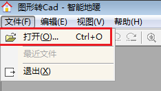
或者点击工具条第一个“打开”图标。
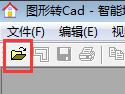
然后在“打开文件”窗口中，选择一个图片文件打开，如图：
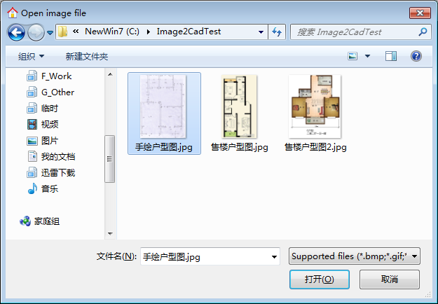
打开后，如下图会预览显示图片内容。
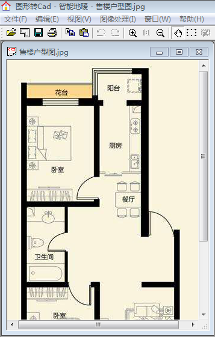
2. 导出为Cad文件：
通过菜单“文件/导出Cad文件(DXF)”
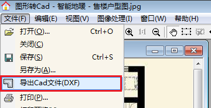
或者点击工具条第二个图标：
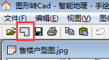
点击后，弹出导出Cad文件预览窗口，如图：
“转换粒度调整”用于调整处理颜色的界限值，直接拖动红圈中的滑块或输入值，看到当前预览图达到最好的效果即可（去掉不需要的装饰，保留墙体等主要结构）。
“去除填充色”按钮，用于处理一些填充的墙体或柱子，改为非填充，避免由于填充色块导致转换后线条倾斜问题。
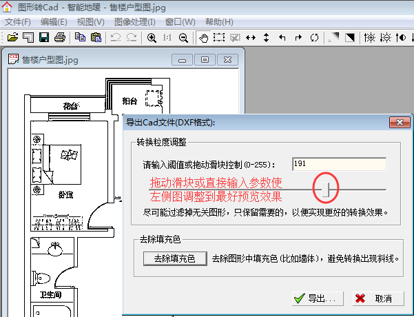
调整好预览图后，点击“导出”按钮，即可选择一个位置保存导出的Cad文件（dxf格式）。
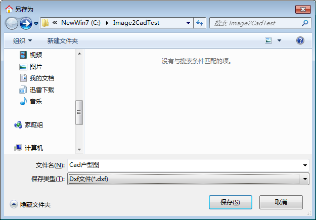
保存成功后，程序会提示是否直接打开已导出的Cad文件，
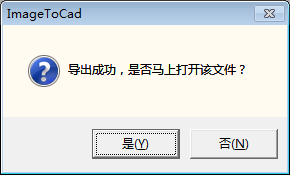
如果已经装有Cad软件的话，选择“是”，则直接打开导出的文件。如图：
注意：如果打开后在Cad中看不到任何图形，这是由于图形坐标不在当前视图中。可双击鼠标滚轮或命令行输入命令Z，空格键确认，再输入A，最后空格确认，即可看到全部图形。
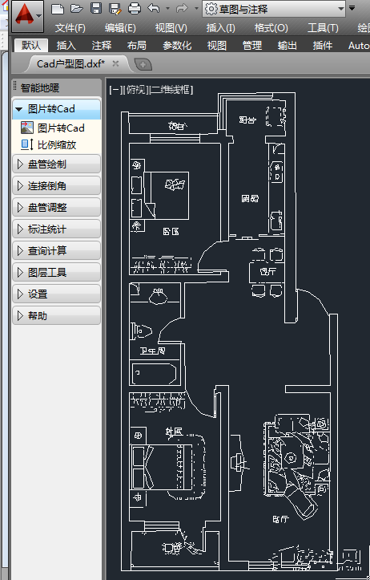
3. 比例缩放：
在转换的户型图中绘制盘管或其他设计工作，还需要调整下比例。因为原始图片是没有单位信息的，从图片转换到Cad的图形，一般还要转换为毫米单位下的尺寸。
通过智能地暖菜单中“比例缩放”命令。该命令等同于Cad自身的缩放命令Scale。
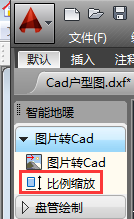
运行命令后，根据命令行提示，选择所有图形，然后指定一个缩放基点（可以选户型中心或任意点），最后输入缩放比例即可。
可以先量取下某个房间尺寸，再用实际房间尺寸（转换到毫米）除以Cad中量取的数值，即为需要输入的缩放比例倍数。
输入缩放倍数时，也可以用“R”关键字，采用参照方式，先在图形中指定一段长度，再输入实际长度即可。
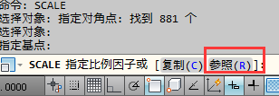
4. 绘制地热盘管：
图形调整比例后，删除不需要的装饰，即可开始绘制地热盘管，如图：
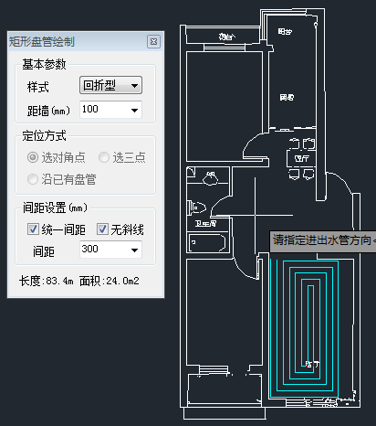
一般图片可按上述步骤直接转换即可，如果图片需要特殊处理，则可以用“图像处理”菜单中相应功能进行处理后，再导出Cad文件，以便获得更好的转换效果。
试用过期后，软件将无法使用，如果您觉得本软件对您有用，可以购买永久授权注册为正式版。
您的支持是我们前进的动力，保持软件持续更新，更好的为您服务。购买授权分为软授权和USB加密狗授权。都可以通过淘宝网店购买。
软加密授权激活方法：购买后发送机器码给客服，即可收到授权码，在软件注册页面中粘贴授权码，点击 “注册”即可成为正式版。软授权无实物邮寄。
USB 加密狗使用方法：购买后，等收到USB加密狗后，直接插到电脑上即可使用软件为正式版。
淘宝购买官方网店：https://item.taobao.com/item.htm?id=549413250207
1.官方下载 http://www.aokex.com/DownLoad/ImageToCad_V2.1.zip
2.百度网盘 https://pan.baidu.com/s/1mjNR6Gw